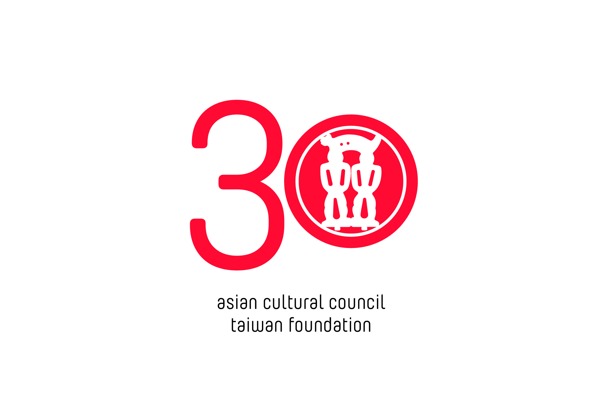
眾心如玉，攜手璧合
三十年前，徐旭東董事長與 ACC 創辦人的姪兒 David Rockefeller Jr. 先生，以及當時的 ACC 執行長 Ralph Samuelson 先生，共同舉辦記者會，宣告 ACC 台灣的成立。從創立開始，ACC台灣獎助計畫已贊助超過300位受獎人，為他們打造跨文化的關鍵性之旅。
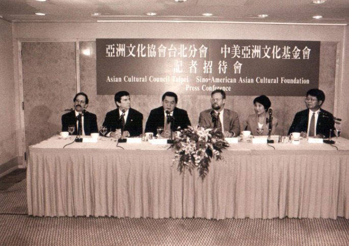

ACC台灣輝煌的30年。今年的生日，我們將向洛克菲勒家族致敬，感謝他們對亞洲文化的尊重與支持。

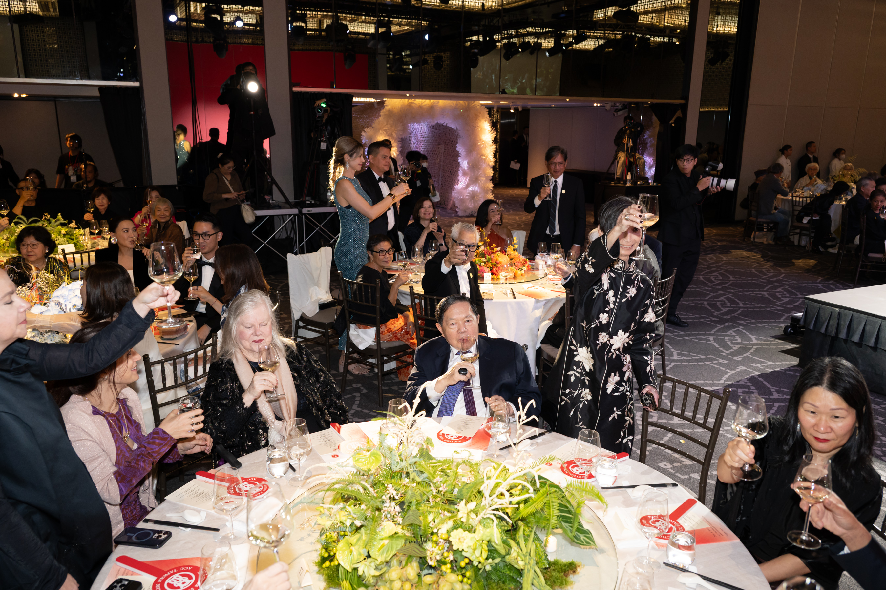
今晚，當我們穿越受獎人游文富為我們特別訂做的竹羽廊道時，就像穿越了一個時光隧道，這一頭是台灣在史前史上的榮光，而廊道的那一頭是 ACC 在台灣期許延續這始於千年前的文化交流及對話的願景。
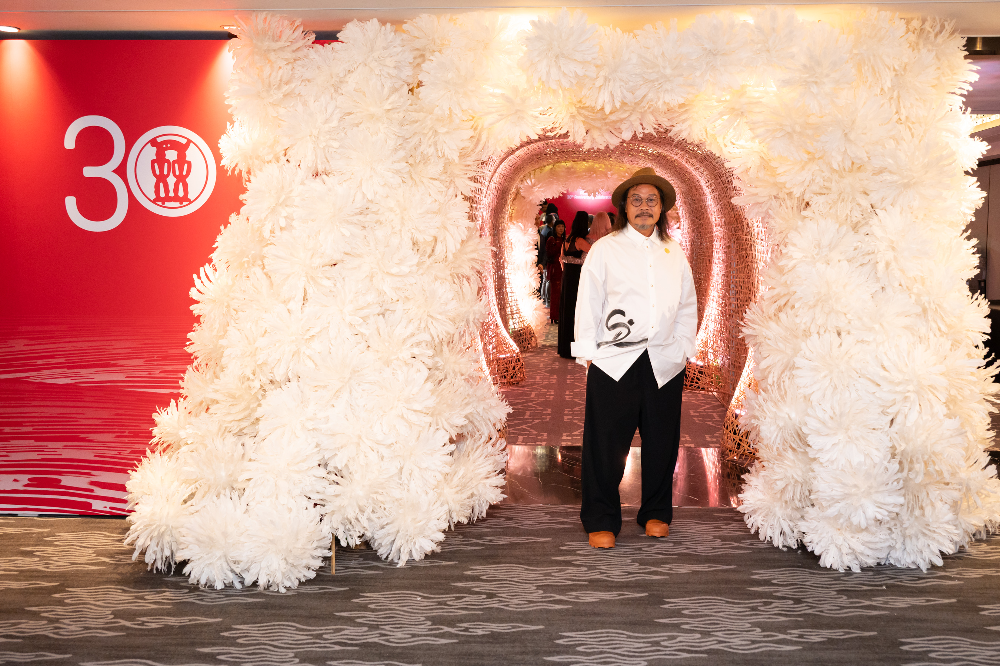
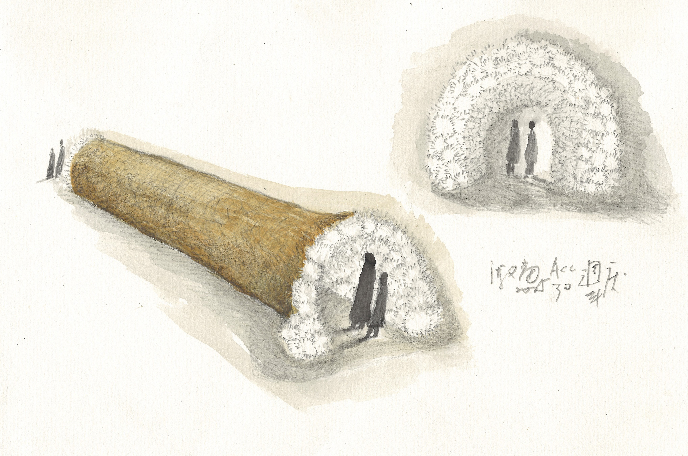
晚宴開場由臺灣國寶級京劇名伶魏海敏（ACC 2023）以既經典又有慶典氛圍的《貴妃醉酒》為 ACC 台灣三十周年晚宴揭開序幕。
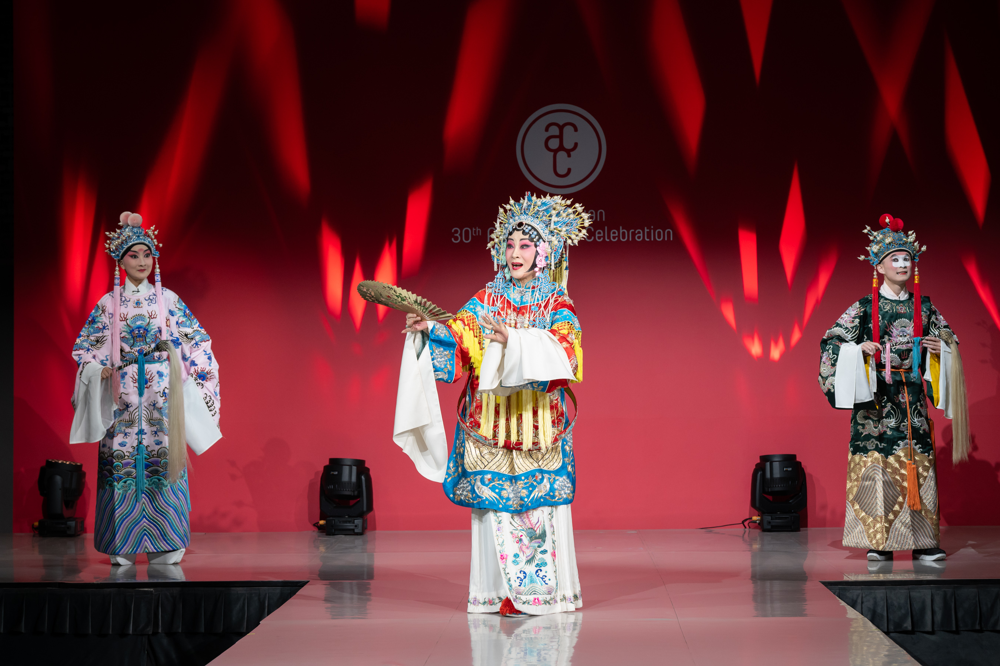
影帝陳以文首次與許芳宜（ACC 2019）老師同台的演出
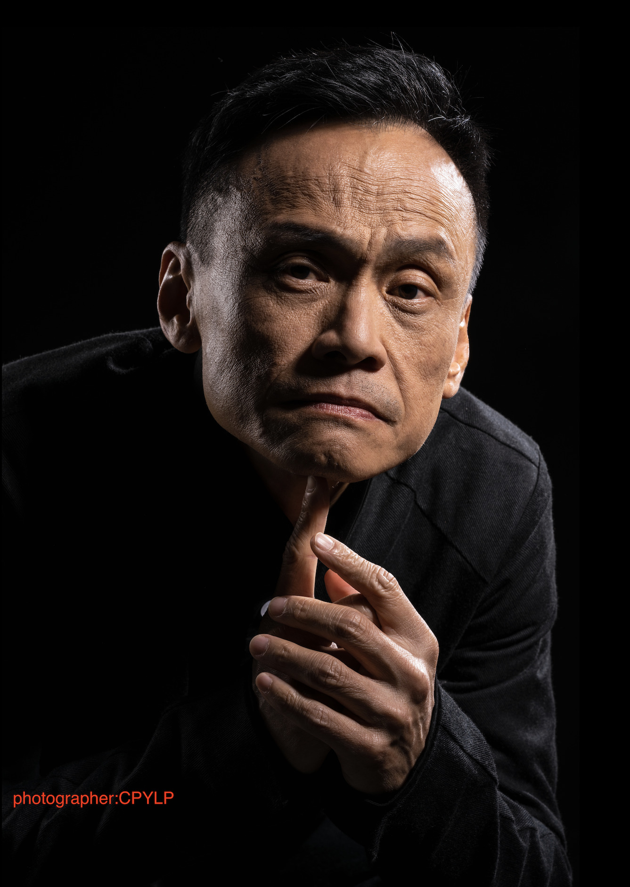
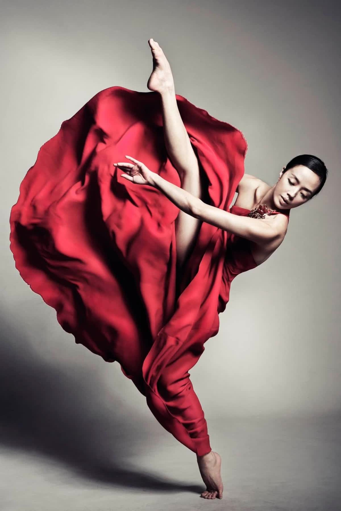
即興鋼琴鬼才李世揚（ACC 2022）以獨特的即興演奏為 ACC 台灣慶生。
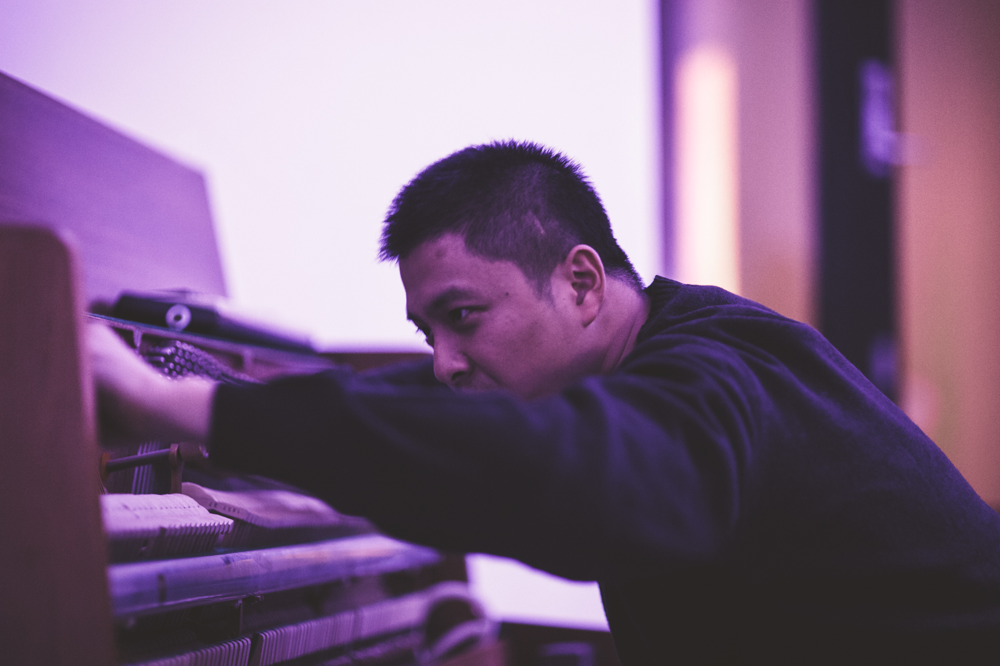
最後由楊奇璇（ACC 2023）、擔任當晚主持人的新生代京劇演員朱柏澄，採用民謠茉莉花的曲調，象徵東西方文化的融合，為受獎人表演畫下句點。
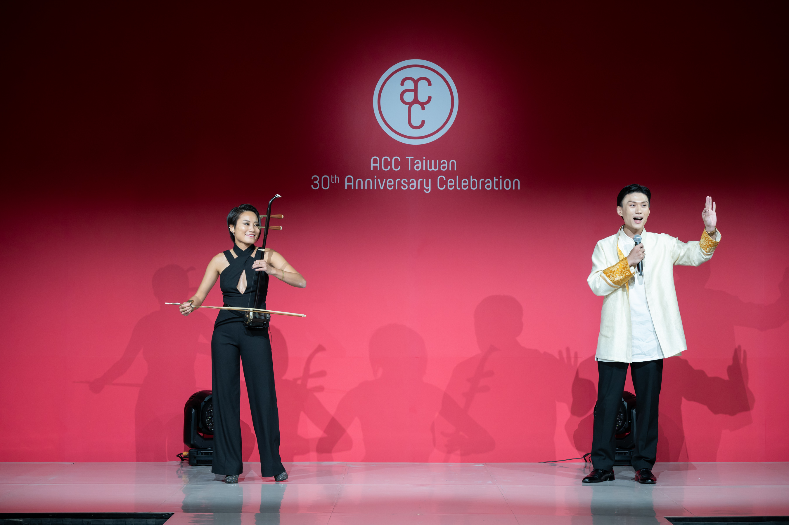
接著則由亞洲首位女性拍賣官Elaine Kwok為我們進行募款拍賣
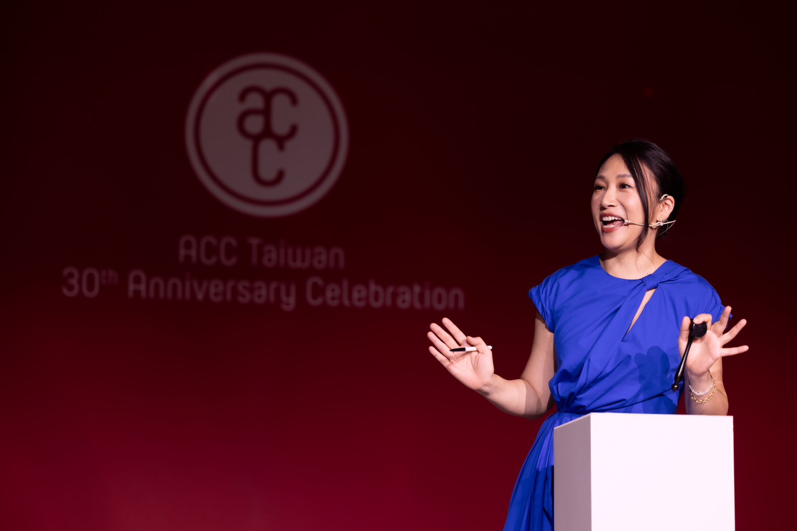
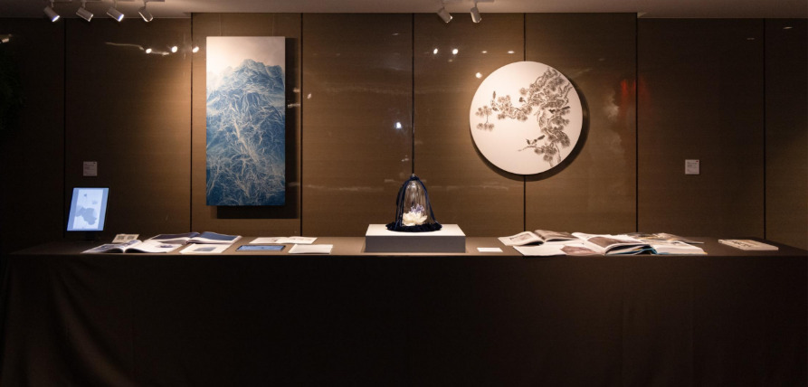
吳季璁
《氰山集之二百四十九》，2025
氰版、宣紙、壓克力膠、壓克力、鋁板
150 × 70 公分
估價：USD 30,000–50,000
由藝術家慷慨捐贈
《氰山集之二百四十九》，2025
氰版、宣紙、壓克力膠、壓克力、鋁板
150 × 70 公分
估價：USD 30,000–50,000
由藝術家慷慨捐贈
佩塔・科因
《無題 #1587 (Two Blossoms)》，2025
特製蠟、絹花、金屬線、絲絨（絲/人造絲）、線、泡棉板、氈布、玻璃櫃、絲絨緞帶、流蘇
29.21 × 30.48 × 30.48 公分
估價：USD 15,000–25,000
由藝術家與紐約畫廊 Galerie Lelong 慷慨捐贈
《無題 #1587 (Two Blossoms)》，2025
特製蠟、絹花、金屬線、絲絨（絲/人造絲）、線、泡棉板、氈布、玻璃櫃、絲絨緞帶、流蘇
29.21 × 30.48 × 30.48 公分
估價：USD 15,000–25,000
由藝術家與紐約畫廊 Galerie Lelong 慷慨捐贈
陳浚豪
《臨摹沈銓四喜圖》，2024
不鏽鋼蚊釘、畫布、碳化夾板
Ø 100 公分
估價：USD 10,000–20,000
由藝術家慷慨捐贈
《臨摹沈銓四喜圖》，2024
不鏽鋼蚊釘、畫布、碳化夾板
Ø 100 公分
估價：USD 10,000–20,000
由藝術家慷慨捐贈
山,懷抱台灣五分之三的土地;
海,承載我們與世界交流的夢;
台灣人,真誠熱情,如甘甜果實般芬芳。

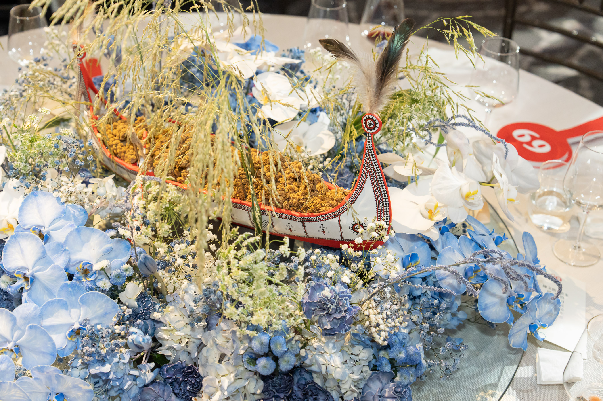
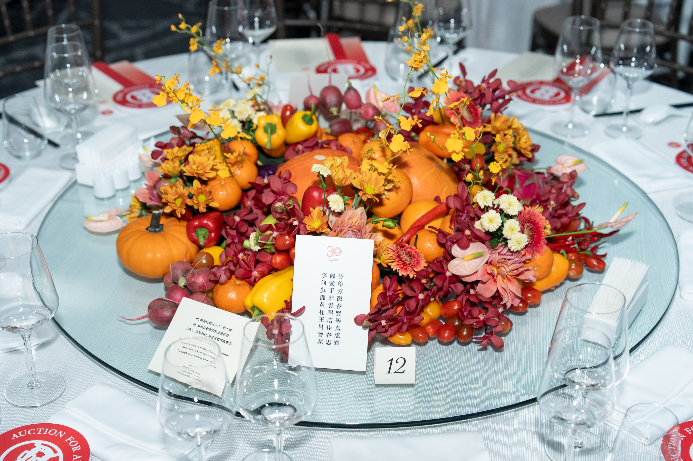
主視覺設計
李俊陽（ACC 2002）
于安如（三三小集會友）
張宛瑩（新興糊紙文化，其弟為ACC 2023張徐展）